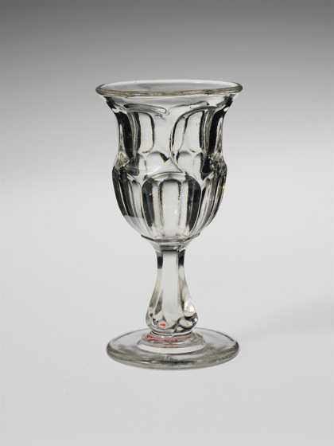
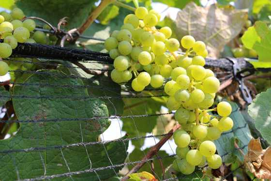
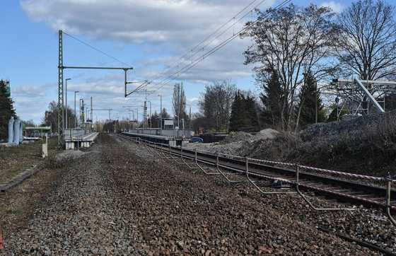
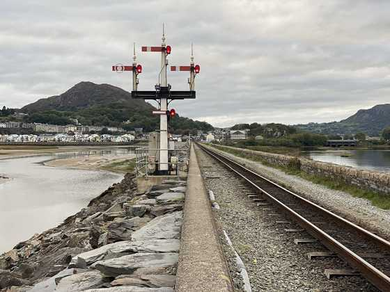
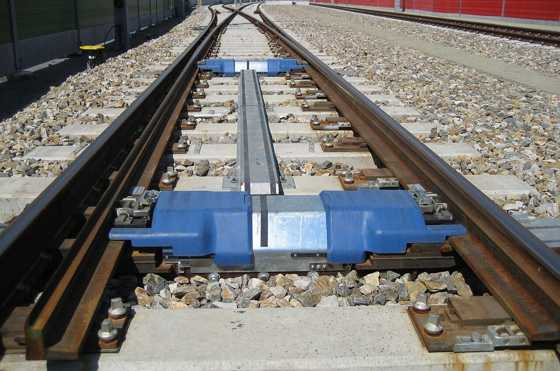
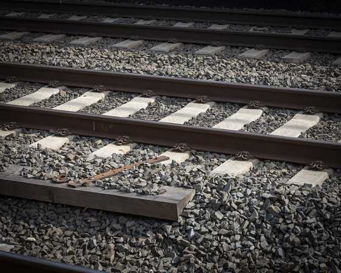
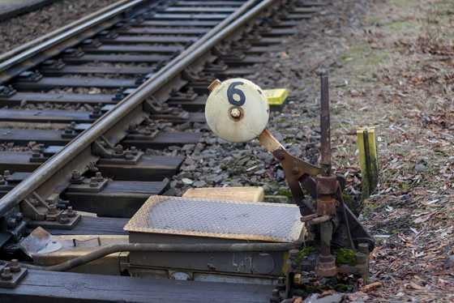

待ち時間の一杯
電車を待つあいだに、温かい飲みものを。
詳細 準備中旅のあいだの、ちいさな待合室。
電車を待つ時間も、夜のワイン一杯も、ここでひと息。
I Three EIGHT(アイ・スリー・エイト)は、北海道岩見沢市のJR岩見沢駅(複合駅舎)1階にあるカフェです。電車やバスの待ち時間、通勤通学のひと休み、ちょっとした打ち合わせ。駅を行き交う人が立ち寄れる、ちいさな居場所をめざしています。
2026年3月には、岩見沢市観光協会が閉店時間を遅らせた「夜カフェ」を月2回開き、空知ワインとおつまみを提供していると報じられました。駅を使う人に、地元・空知のワインを知ってもらうきっかけにしたい、という取り組みです。
店名の意味・由来は確認できていません。トップのコンセプト文は、駅という場所と夜カフェの取り組みから、制作側が考えたイメージです。

メニューの品目・価格は準備中です。夜カフェでは空知ワインとおつまみが提供されたと報じられています(開催日・内容は日により異なる可能性があります)。
電車を待つあいだに、温かい飲みものを。
詳細 準備中
月2回の夜カフェで、地元のワインとおつまみを。
詳細 準備中
ワインの背景にある、空知のぶどう畑を思いながら。
価格 準備中








※掲載の写真はフリー素材のイメージで、店舗の実際の様子・料理・内装ではありません。
電車まで少し時間があって立ち寄りました。コンセントと Wi-Fi があるので、メールを返しながらゆっくりできました。
仕事帰りの夜カフェで地元のワインをいただきました。駅の中でこんな時間が過ごせるのは嬉しいです。
テイクアウトで温かい飲みものを買って、そのまま電車へ。通勤の朝の楽しみになりそうです。
上の3件は制作側が作成したイメージ例で、実在のお客様の声ではありません。
写真は縮小・トリミングの加工あり。いずれも撮影地は岩見沢ではありません。